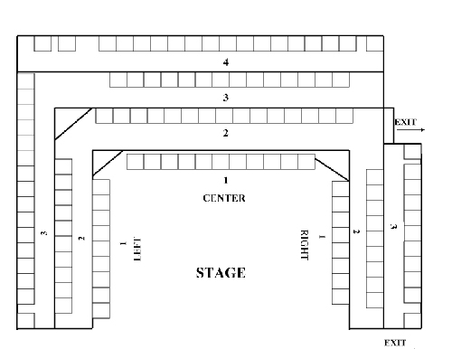

General Theatre Information
Phone
for Box Office or Ticket Info
407-841-0083
Address
2113 N Orange Ave
Orlando, FL 32804
Performance Times
Thursdays, Fridays and Saturdays at 8:00 pm
Sundays at 2:30 pm
Admission
Tickets vary from $16 through $22
1st Thursday after opening, tickets are $10
Box Office Hours
1:00-6:00 pm Wednesdays-Saturdays
or 30 minutes prior to curtain
Directions
2113 N Orange Ave
Easily located on the corner of Orange Ave and Princeton Street in the heart of
Orlando’s cultural district, two blocks east of I-4 and two blocks west of the Loch
Haven Park complex (Orlando Science Center, Civic Theatre, Orlando Museum of Art, etc.)
Parking
Parking is south of the theatre on Orange Av. in the 2 adjoining street level lots.
Signs do say Florida Hospital private parking but theatre parking is ok for evenings and Sunday Matinees.
Reservations
All reservations can be paid at the door. If you wish to have seats designated for
your party, you must pay in advance with a credit card. Paid tickets will be held until
curtain time the night of the performance.
There will be no exceptions
Seating
Seating is designated only for patrons who pre-pay with a credit card. All other
seating is general. We are unable to guarantee exact seat location, but every effort
will be made to accommodate your seating requests.

Volunteering
Theatre Downtown is a volunteer organization. Everyone you see onstage, backstage,
and in the booth volunteers their time to keep the Theatre alive and to produce the
shows you see. Volunteering offers a great way to meet interesting people, get to know
the Orlando arts community, and learn new skills. Getting involved is easy: just
sign up through the link below